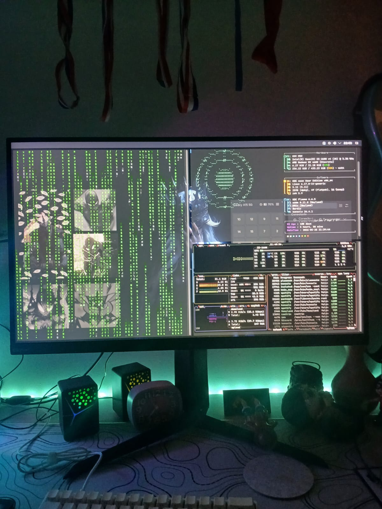

APRESENTAÇÃO PESSOAL
Osmar Felipe de Carvalho
Entre tecnologia, música e novos lugares.
Idade15 anos
Nascimento16 de agosto de 2010
Onde moroZona Norte de São Paulo

Sobre mim
Opa tudo bem? Eu sou o Osmar!
Eu moro na Zona Norte de São Paulo na Vila Amalia, perto do horto florestal.

Curiosidades
Estou aprendendo a tocar guitarra

Uso Linux como meu sistema principal

Gosto de jogar videogame
Adoro ouvir música
Gosto muito de ler
Meus artistas favoritos
Eu gosto muito de ouvir música. Meu principal gênero é hip-hop, mas recentemente comecei a escutar R&B. Ultimamente, tenho ouvido bastante boombap, trap e R&B.


Lugares que já visitei
Eu nunca sai do Brasil, mas sonho em conhecer outros países, os lugares que eu já visitei do Brasil são:
- Maceió - Alagoas
- Guapiaçu - São Paulo
- Andradina - São Paulo
- Socorro - São Paulo
- Serra Negra - São Paulo
- Guarajá - São Paulo
- Campos de Jordão - São Paulo
- Ubatuba - São Paulo
- São Pedro - São Paulo
- Seara - Santa Catarina
- Floriánopolis - Santa Catarina
- Balneário Camboriú - Santa Catarina
- Poços de Caldas - Minas Gerais
 Imagem de Maceió, Alagoas
Imagem de Maceió, Alagoas Imagem de Guapiaçu, São Paulo
Imagem de Guapiaçu, São Paulo Imagem de Andradina, São Paulo
Imagem de Andradina, São Paulo Imagem de Socorro, São Paulo
Imagem de Socorro, São Paulo Imagem de Serra Negra, São Paulo
Imagem de Serra Negra, São Paulo Imagem de Guarajá, São Paulo
Imagem de Guarajá, São Paulo Imagem de Campos de Jordão, São Paulo
Imagem de Campos de Jordão, São Paulo Imagem de Ubatuba, São Paulo
Imagem de Ubatuba, São Paulo Imagem de São Pedro, São Paulo
Imagem de São Pedro, São Paulo Imagem de Seara, Santa Catarina
Imagem de Seara, Santa Catarina Imagem de Floriánopolis, Santa Catarina
Imagem de Floriánopolis, Santa Catarina Imagem de Balneário Camboriú, Santa Catarina
Imagem de Balneário Camboriú, Santa Catarina Imagem de Poços de Caldas, Minas Gerais
Imagem de Poços de Caldas, Minas GeraisLugares que sonho em conhecer
Eu sonho em conhecer muitos países, entre eles:
 Tóquio, Japão
Tóquio, Japão Roma, Itália
Roma, Itália Londres, Inglaterra
Londres, Inglaterra Sydney, Austrália
Sydney, Austrália Barcelona, Espanha
Barcelona, Espanha Imagem de Genebra, Suiça
Imagem de Genebra, Suiça Atenas, Grécia
Atenas, Grécia